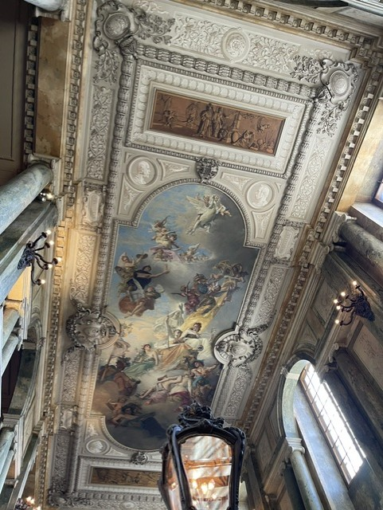
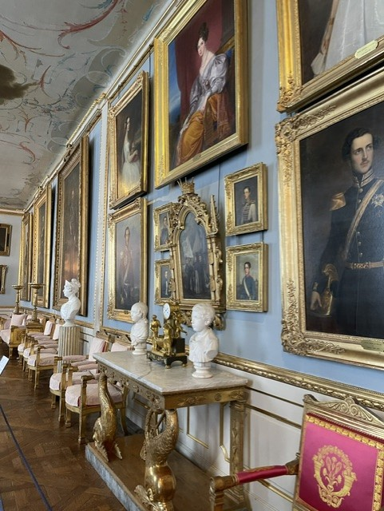
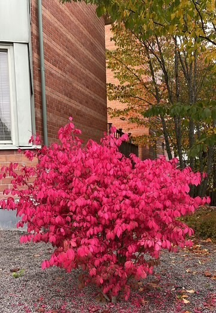
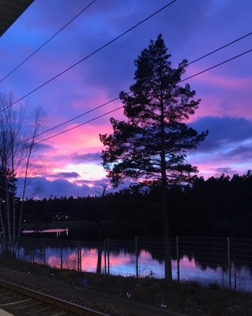
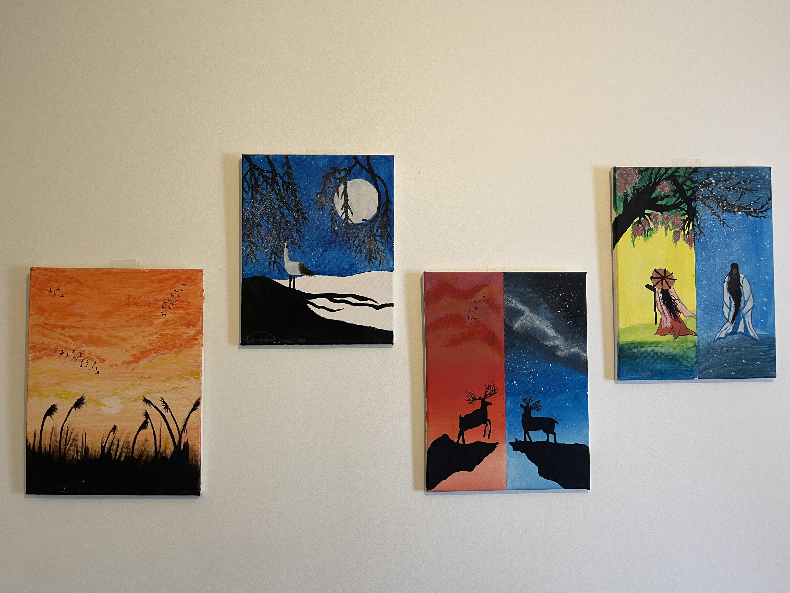
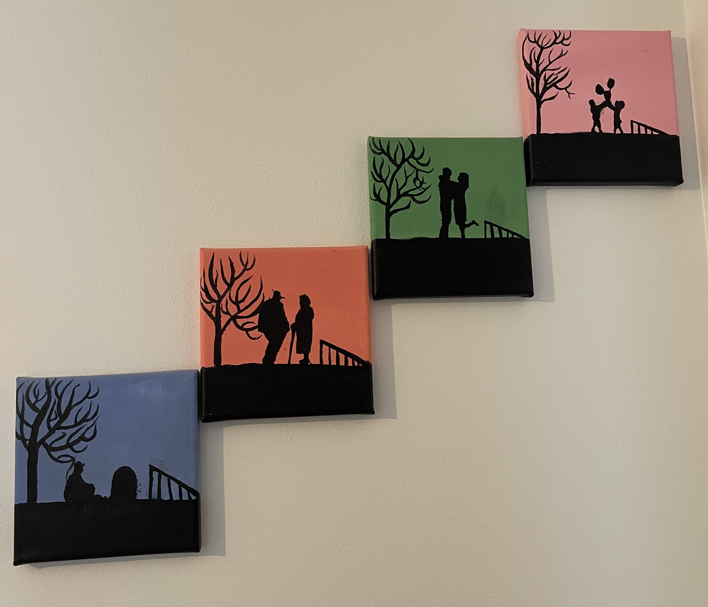

Jag gillar allt som gäller konst och målning. Jag brukar alltid att ta bilder på grejer som jag ser att det är fint särskilt gamla arkitektur och naturen. Jag tror att photography är en fantastisk för att fånga moment som man kan titta på senare. Här kommer lie bilder som jag har tagit med min mobil:




Jag även gillar och måla själv och här är lite av mina målningar.


Här är några andra hobby eller intresse som jag har och brukar göra:
| Intresse | Med vem | När | Varför? |
|---|---|---|---|
| Lyssna på musik | Själv | Nästan hela tiden | För att slappna av och få inspiration |
| Testa ny platser | familjen/vänner | I helgen | För att utforska nya ställen och skapa minnen |
| kolla på nyheter | själv | Dagligen | För att hålla koll på vad som händer i världen |
Här är alkompis nyheter webbsidan som jag brukar kollar på